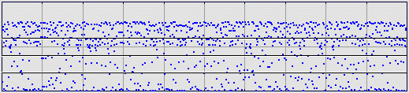
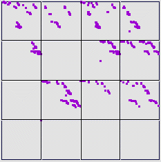

Sometimes a clearer pattern is observed by differences of data points. From the
sequence
x2-x1, x3-x2, x4-x3, ...
Here are the one-step differences from the same logistic map data. The IFS is driven using equal size bins.
|  |
Here is the driven IFS.
|  |
Return to Sample.